有同城参考用TRAINREF，无则用EXT
固定可用性规则 · 0新fit · 0背景predict · 62,004行和所有匹配场同规则
预定规则 · 完整结果 · 分组与低污染 · 工业348 · 149迁移评价 · 90相邻日期与切换 · 两源模型全部四季图
实际效果与条件
只由独立同城TRAIN前1h输入可用性选择。CITY全无同城参考，逐行完全使用EXT。原B58来源重叠、归档发布延迟未知、事件已曝光事实保留。
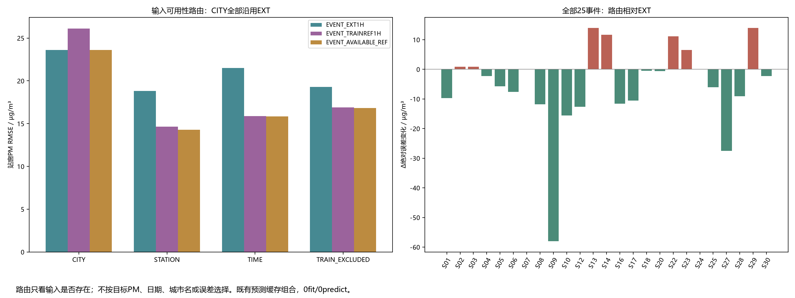
| evaluation_group |
stratum |
method |
n |
RMSE |
MAE |
bias |
| CITY |
ALL |
B58 |
3106 |
29.381 |
17.472 |
-1.620 |
| CITY |
ALL |
EVENT_RETRAIN_CONTROL |
3106 |
27.319 |
16.635 |
-1.631 |
| CITY |
ALL |
EVENT_EXT1H |
3106 |
23.605 |
13.968 |
-0.552 |
| CITY |
ALL |
EVENT_TRAINREF1H |
3106 |
26.122 |
15.223 |
-2.997 |
| CITY |
ALL |
EVENT_AVAILABLE_REF |
3106 |
23.605 |
13.968 |
-0.552 |
| STATION |
ALL |
B58 |
5083 |
24.254 |
15.919 |
0.423 |
| STATION |
ALL |
EVENT_RETRAIN_CONTROL |
5083 |
22.933 |
15.211 |
0.603 |
| STATION |
ALL |
EVENT_EXT1H |
5083 |
18.812 |
12.185 |
0.096 |
| STATION |
ALL |
EVENT_TRAINREF1H |
5083 |
14.638 |
9.337 |
0.367 |
| STATION |
ALL |
EVENT_AVAILABLE_REF |
5083 |
14.282 |
9.192 |
0.350 |
| TIME |
ALL |
B58 |
4703 |
27.953 |
16.032 |
-1.973 |
| TIME |
ALL |
EVENT_RETRAIN_CONTROL |
4703 |
28.453 |
16.127 |
-1.965 |
| TIME |
ALL |
EVENT_EXT1H |
4703 |
21.510 |
12.591 |
-1.289 |
| TIME |
ALL |
EVENT_TRAINREF1H |
4703 |
15.875 |
9.430 |
-0.373 |
| TIME |
ALL |
EVENT_AVAILABLE_REF |
4703 |
15.839 |
9.403 |
-0.340 |
| TRAIN_EXCLUDED |
ALL |
B58 |
5216 |
26.281 |
17.623 |
0.897 |
| TRAIN_EXCLUDED |
ALL |
EVENT_RETRAIN_CONTROL |
5216 |
24.070 |
16.217 |
-0.079 |
| TRAIN_EXCLUDED |
ALL |
EVENT_EXT1H |
5216 |
19.276 |
12.918 |
0.283 |
| TRAIN_EXCLUDED |
ALL |
EVENT_TRAINREF1H |
5216 |
16.903 |
10.278 |
0.562 |
| TRAIN_EXCLUDED |
ALL |
EVENT_AVAILABLE_REF |
5216 |
16.826 |
10.217 |
0.571 |
25事件与切换代价
| method |
pairs |
event_RMSE |
event_MAE |
positive_delta_pairs |
switched_pairs |
| B58 |
25 |
78.042 |
51.719 |
23 |
0 |
| EVENT_AVAILABLE_REF |
25 |
32.842 |
24.660 |
25 |
0 |
| EVENT_EXT1H |
25 |
37.267 |
29.950 |
24 |
0 |
| EVENT_RETRAIN_CONTROL |
25 |
72.290 |
47.129 |
23 |
0 |
| EVENT_TRAINREF1H |
25 |
31.951 |
24.057 |
25 |
0 |
| site_id |
observed_delta_route |
predicted_delta_ext |
predicted_delta_route |
route_switched_route |
change_vs_EXT |
| S05_jiaozuo_1829A |
84.0 |
44.458 |
50.149 |
False |
-5.691 |
| S07_jining_3678A |
68.0 |
6.967 |
6.967 |
False |
0.000 |
| S09_nantong_1168A |
53.0 |
-29.423 |
28.617 |
False |
-58.039 |
| S13_yangquan_1742A |
205.0 |
171.394 |
157.429 |
False |
13.966 |
| S22_jiaozuo_3169A |
99.0 |
63.943 |
52.757 |
False |
11.186 |
| S24_jining_1653A |
19.0 |
22.533 |
22.533 |
False |
0.000 |
| S29_yangquan_1738A |
250.0 |
171.394 |
157.429 |
False |
13.966 |
| route_switched |
new_TRAIN_repeat_any |
method |
n |
delta_RMSE |
delta_MAE |
| False |
False |
EVENT_AVAILABLE_REF |
75 |
13.766 |
9.919 |
| False |
False |
EVENT_EXT1H |
75 |
17.669 |
13.177 |
| False |
False |
EVENT_TRAINREF1H |
75 |
15.627 |
10.904 |
| False |
True |
EVENT_AVAILABLE_REF |
13 |
7.789 |
6.378 |
| False |
True |
EVENT_EXT1H |
13 |
19.200 |
15.928 |
| False |
True |
EVENT_TRAINREF1H |
13 |
7.789 |
6.378 |
| True |
True |
EVENT_AVAILABLE_REF |
2 |
9.273 |
9.086 |
| True |
True |
EVENT_EXT1H |
2 |
10.788 |
9.981 |
| True |
True |
EVENT_TRAINREF1H |
2 |
5.210 |
4.870 |
本城参考缺测时的实际代价
切换代价明确保留：铁岭2216A的2021-08-26同城输入缺测，按固定规则选EXT；其前后两对相邻日期ΔRMSE为9.2726，优于EXT的10.7880，但差于TRAINREF的5.2103。两对均含新TRAIN重复日期。25事件本身路由不切换；路由ΔRMSE32.8425略差于单TRAINREF31.9512，优于EXT37.2673。未按这些结果调整路由。
铁岭四日原数值
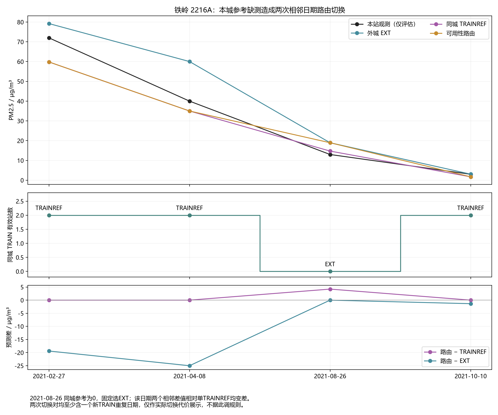
全部25双日图
同原支持、同RAW色限；超界颜色饱和不代表数值裁切。相对局地纹理完全复用。
S01_beijing_1012A
完整PNG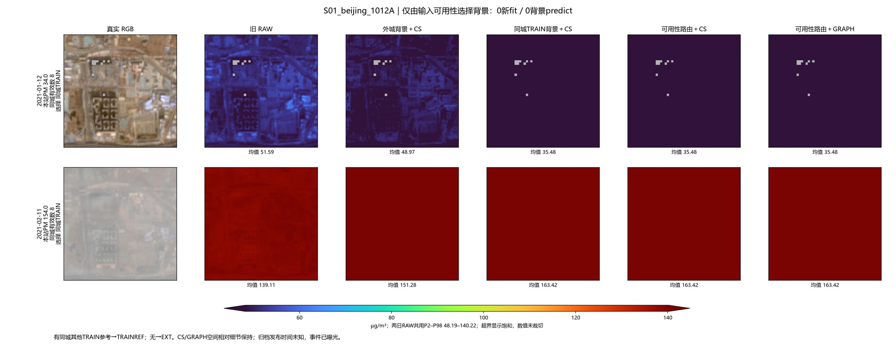
S02_dandong_1602A
完整PNG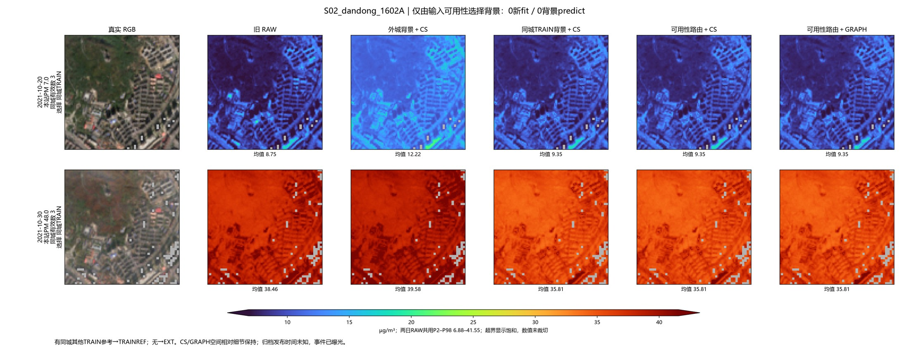
S03_daqing_1793A
完整PNG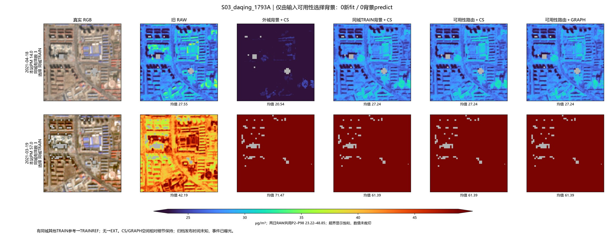
S04_jian_2368A
完整PNG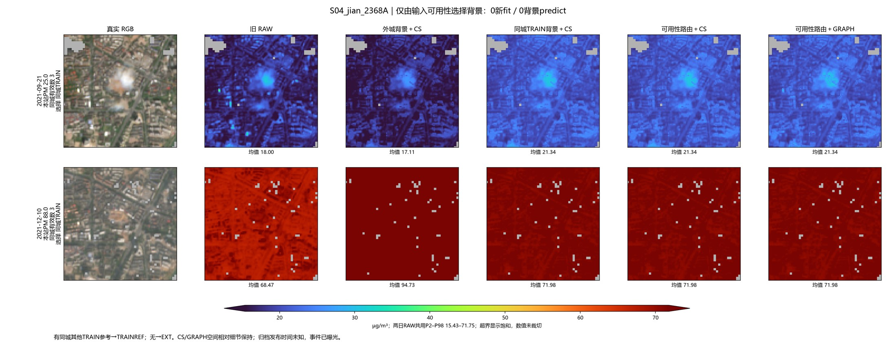
S05_jiaozuo_1829A
完整PNG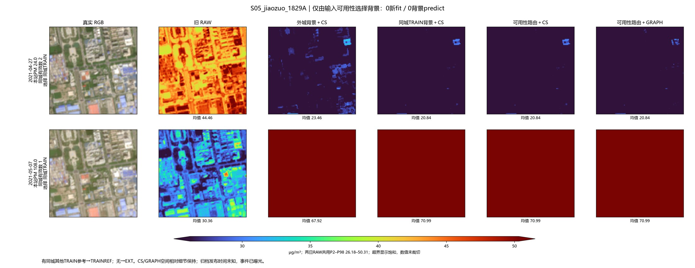
S06_jinan_1300A
完整PNG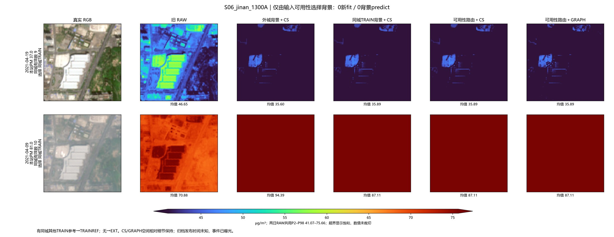
S07_jining_3678A
完整PNG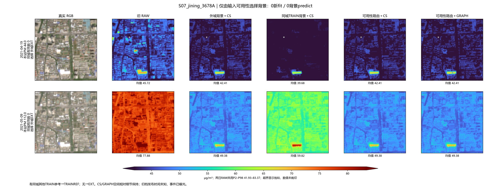
S08_linfen_3668A
完整PNG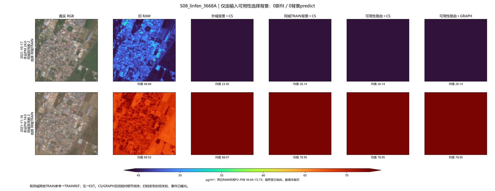
S09_nantong_1168A
完整PNG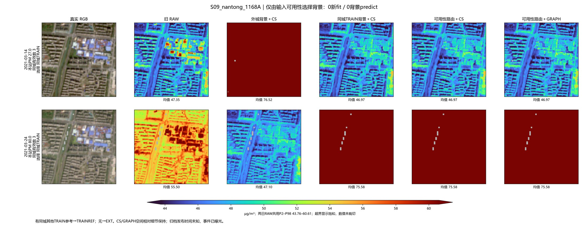
S10_nanyang_2406A
完整PNG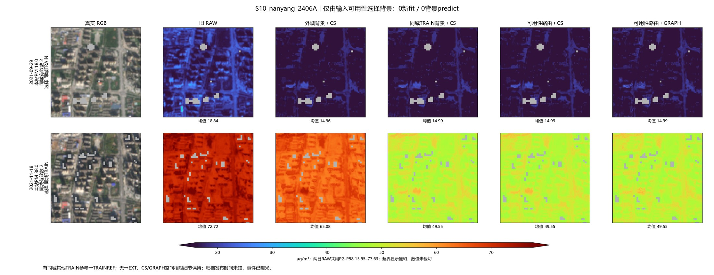
S12_xuzhou_1181A
完整PNG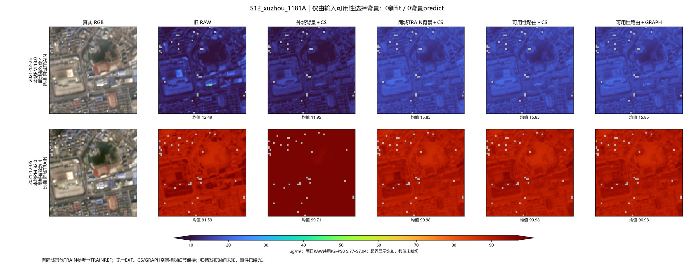
S13_yangquan_1742A
完整PNG
S14_yongzhou_2479A
完整PNG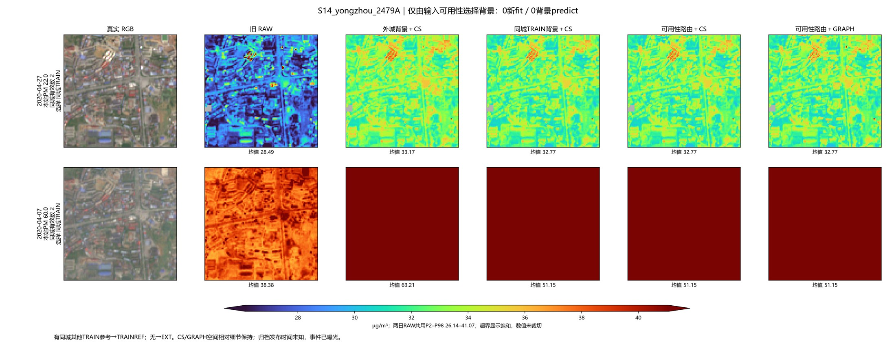
S16_zhoukou_2068A
完整PNG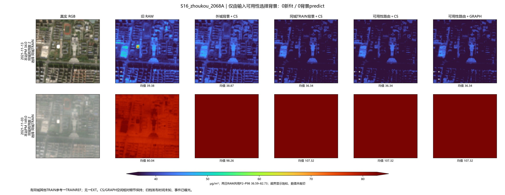
S17_zibo_1635A
完整PNG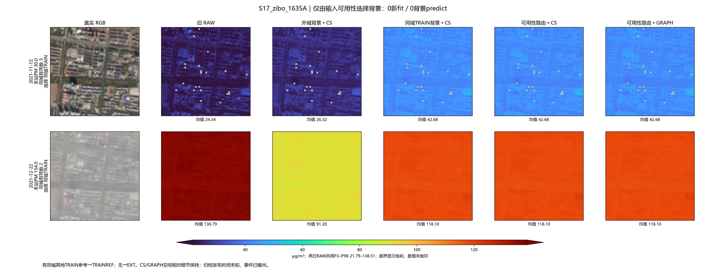
S18_beijing_1010A
完整PNG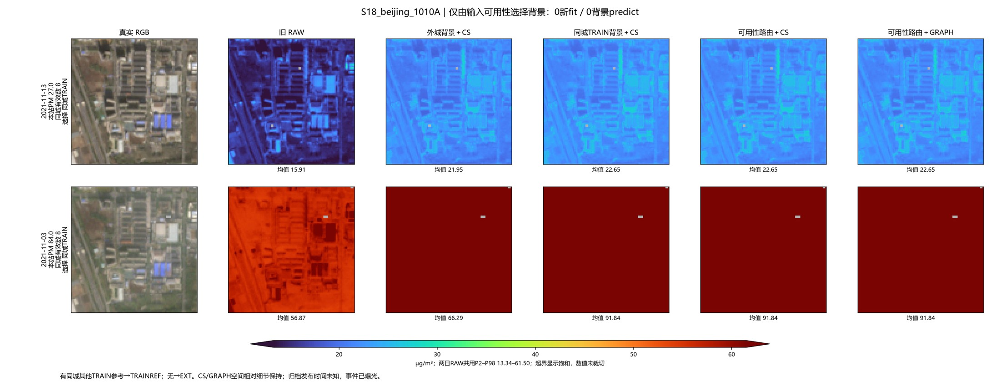
S20_daqing_1791A
完整PNG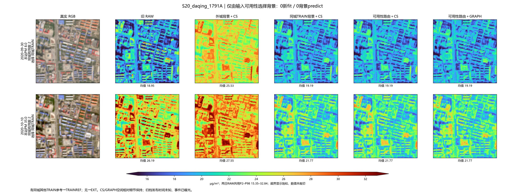
S22_jiaozuo_3169A
完整PNG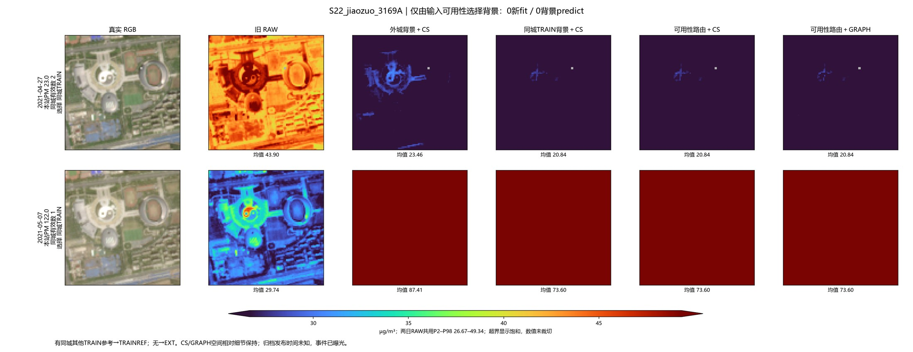
S23_jinan_3064A
完整PNG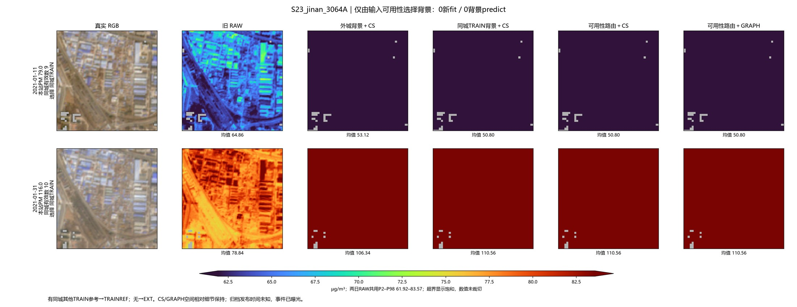
S24_jining_1653A
完整PNG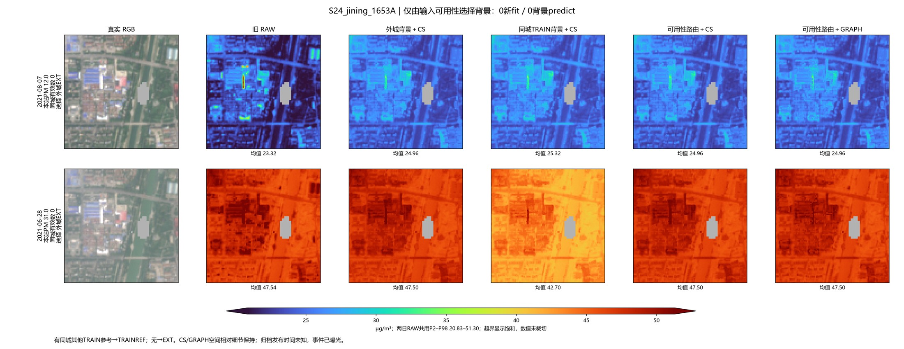
S25_linfen_3018A
完整PNG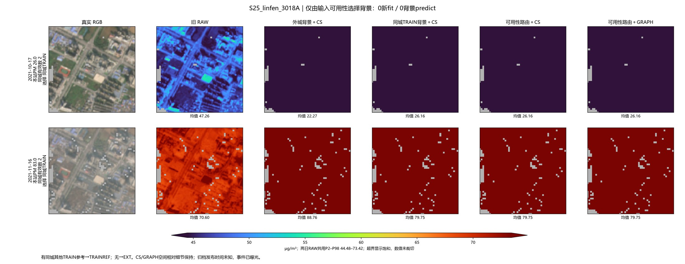
S27_nanyang_2407A
完整PNG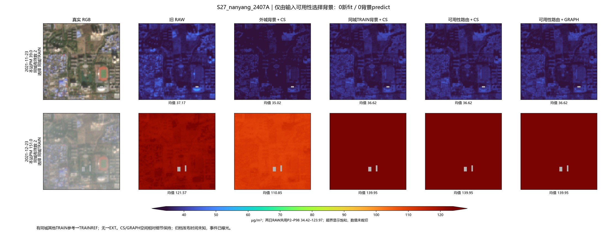
S28_xuzhou_1182A
完整PNG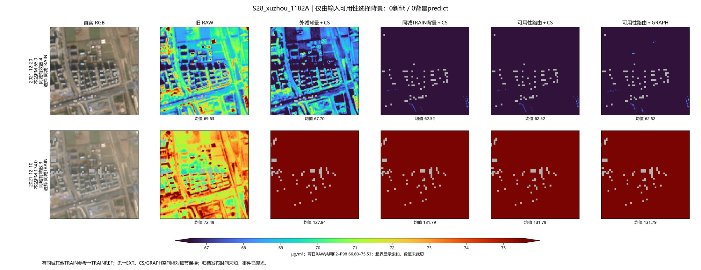
S29_yangquan_1738A
完整PNG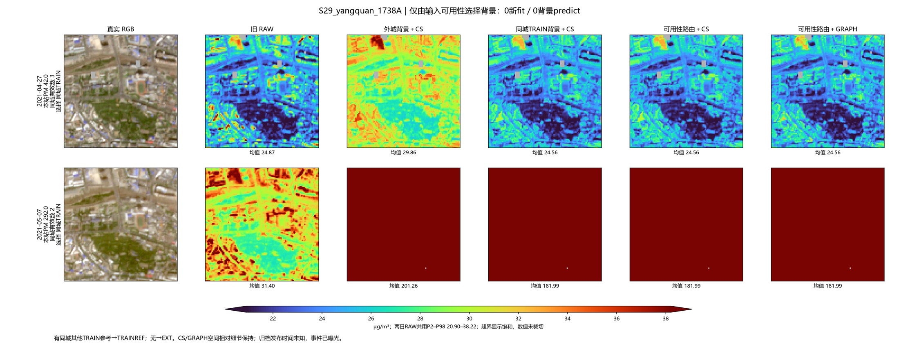
S30_yongzhou_2478A
完整PNG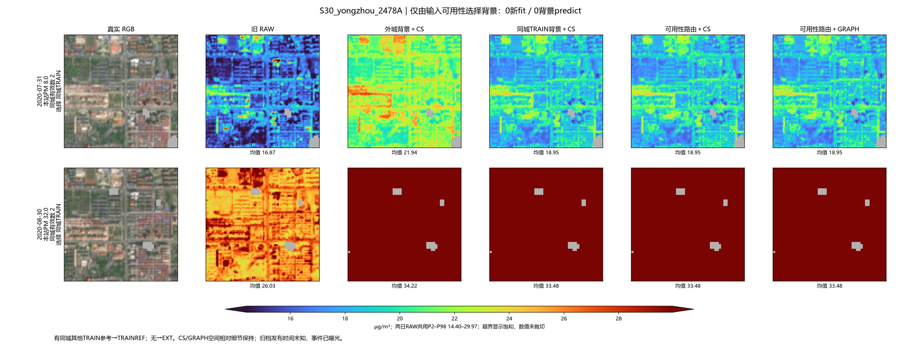